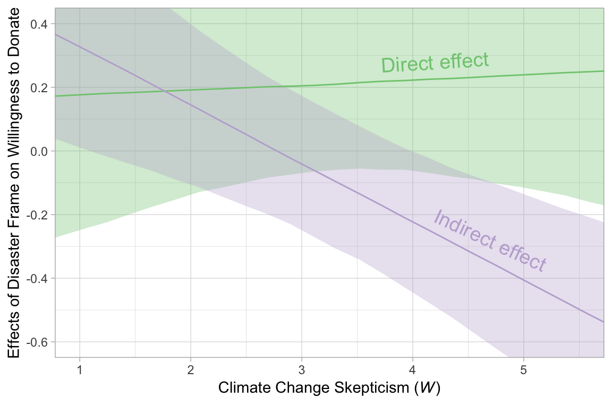
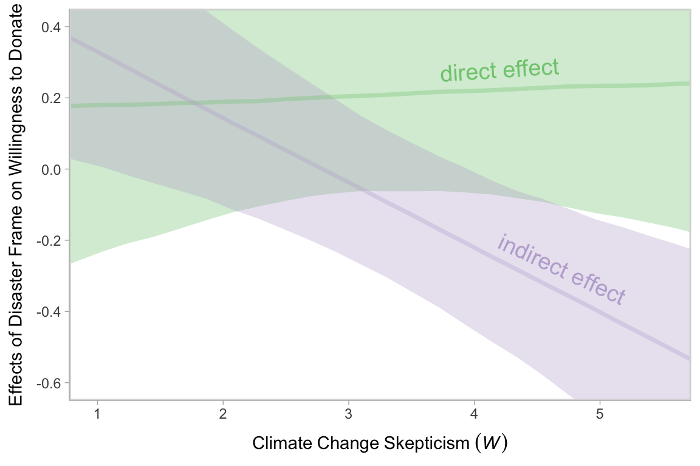

12.2 Moderation of the direct and indirect effects in a conditional process model
We don’t need to do anything particularly special to fit a model like this in brms. It just requires we do a careful job specifying the formulas in our bf() arguments. If you find this syntax a little too cumbersome, you can always specify the formulas outside of brm(), save them as one or multiple objects, and plug those objects into brm().
model3 <-
brm(data = disaster, family = gaussian,
bf(justify ~ 1 + frame + skeptic + frame:skeptic) +
bf(donate ~ 1 + frame + justify + skeptic + frame:skeptic) +
set_rescor(FALSE),
chains = 4, cores = 4)The model summary:
print(model3, digits = 3)## Family: MV(gaussian, gaussian)
## Links: mu = identity; sigma = identity
## mu = identity; sigma = identity
## Formula: justify ~ 1 + frame + skeptic + frame:skeptic
## donate ~ 1 + frame + justify + skeptic + frame:skeptic
## Data: disaster (Number of observations: 211)
## Samples: 4 chains, each with iter = 2000; warmup = 1000; thin = 1;
## total post-warmup samples = 4000
##
## Population-Level Effects:
## Estimate Est.Error l-95% CI u-95% CI Eff.Sample Rhat
## justify_Intercept 2.449 0.150 2.162 2.739 4000 1.000
## donate_Intercept 7.293 0.276 6.735 7.823 4000 1.000
## justify_frame -0.556 0.219 -0.977 -0.128 3612 1.000
## justify_skeptic 0.106 0.038 0.030 0.180 4000 1.000
## justify_frame:skeptic 0.199 0.056 0.092 0.305 3302 1.000
## donate_frame 0.157 0.273 -0.380 0.694 3437 1.000
## donate_justify -0.924 0.082 -1.089 -0.763 4000 1.000
## donate_skeptic -0.043 0.047 -0.135 0.050 4000 1.000
## donate_frame:skeptic 0.016 0.070 -0.121 0.152 2988 1.000
##
## Family Specific Parameters:
## Estimate Est.Error l-95% CI u-95% CI Eff.Sample Rhat
## sigma_justify 0.819 0.041 0.742 0.902 4000 1.000
## sigma_donate 0.989 0.049 0.897 1.091 4000 1.001
##
## Samples were drawn using sampling(NUTS). For each parameter, Eff.Sample
## is a crude measure of effective sample size, and Rhat is the potential
## scale reduction factor on split chains (at convergence, Rhat = 1).12.2.1 Estimation using PROCESS.
We just fit the model. Next.
12.2.2 Quantifying direct and indirect effects.
Here are \(a_{1}\) through \(a_{3}\).
fixef(model3)[c(3:5), ] %>% round(digits = 3)## Estimate Est.Error Q2.5 Q97.5
## justify_frame -0.556 0.219 -0.977 -0.128
## justify_skeptic 0.106 0.038 0.030 0.180
## justify_frame:skeptic 0.199 0.056 0.092 0.305This is \(b\).
fixef(model3)[7, ] %>% round(digits = 3)## Estimate Est.Error Q2.5 Q97.5
## -0.924 0.082 -1.089 -0.763We’ll need to employ posterior_samples() to compute \((a_{1} + a_{3}W)b\).
post <-
posterior_samples(model3) %>%
mutate(`indirect effect when W is 1.592` = (b_justify_frame + `b_justify_frame:skeptic`*1.592)*b_donate_justify,
`indirect effect when W is 2.800` = (b_justify_frame + `b_justify_frame:skeptic`*2.800)*b_donate_justify,
`indirect effect when W is 5.200` = (b_justify_frame + `b_justify_frame:skeptic`*5.200)*b_donate_justify)
post %>%
select(starts_with("indirect")) %>%
gather() %>%
group_by(key) %>%
median_qi(value, .prob = .95) %>%
mutate_if(is.double, round, digits = 3)## # A tibble: 3 x 5
## # Groups: key [3]
## key value conf.low conf.high .prob
## <chr> <dbl> <dbl> <dbl> <dbl>
## 1 indirect effect when W is 1.592 0.22 -0.058 0.502 0.95
## 2 indirect effect when W is 2.800 -0.004 -0.215 0.21 0.95
## 3 indirect effect when W is 5.200 -0.442 -0.735 -0.161 0.9512.2.2.1 The conditional direct effect of \(X\).
This process is very similar.
post <-
post %>%
mutate(`direct effect when W is 1.592` = b_donate_frame + `b_donate_frame:skeptic`*1.592,
`direct effect when W is 2.800` = b_donate_frame + `b_donate_frame:skeptic`*2.800,
`direct effect when W is 5.200` = b_donate_frame + `b_donate_frame:skeptic`*5.200)
post %>%
select(starts_with("direct")) %>%
gather() %>%
group_by(key) %>%
median_qi(value, .prob = .95) %>%
mutate_if(is.double, round, digits = 3)## # A tibble: 3 x 5
## # Groups: key [3]
## key value conf.low conf.high .prob
## <chr> <dbl> <dbl> <dbl> <dbl>
## 1 direct effect when W is 1.592 0.185 -0.181 0.55 0.95
## 2 direct effect when W is 2.800 0.202 -0.079 0.484 0.95
## 3 direct effect when W is 5.200 0.243 -0.129 0.617 0.9512.2.3 Visualizing the direct and indirect effects.
In order to make Figure 12.7, we’ll use sapply() to get the conditional effects for justify and donate.
justify_effects <-
sapply(seq(from = 0, to = 6, length.out = 30), function(w){
(post$b_justify_frame + post$`b_justify_frame:skeptic`*w)*post$b_donate_justify
}) %>%
as_tibble() %>%
gather() %>%
select(-key) %>%
mutate(skeptic = seq(from = 0, to = 6, length.out = 30) %>% rep(., each = 4000)) %>%
group_by(skeptic) %>%
summarize(median = median(value),
ll = quantile(value, probs = .025),
ul = quantile(value, probs = .975))
donate_effects <-
sapply(seq(from = 0, to = 6, length.out = 30), function(w){
post$b_donate_frame + post$`b_donate_frame:skeptic`*w
}) %>%
as_tibble() %>%
gather() %>%
select(-key) %>%
mutate(skeptic = seq(from = 0, to = 6, length.out = 30) %>% rep(., each = 4000)) %>%
group_by(skeptic) %>%
summarize(median = median(value),
ll = quantile(value, probs = .025),
ul = quantile(value, probs = .975))
# here's what they look like:
glimpse(justify_effects)## Observations: 30
## Variables: 4
## $ skeptic <dbl> 0.0000000, 0.2068966, 0.4137931, 0.6206897, 0.8275862, 1.0344828, 1.2413793, 1.4482759, 1...
## $ median <dbl> 0.50539067, 0.46857364, 0.43162692, 0.39424740, 0.35772917, 0.32106437, 0.28395008, 0.246...
## $ ll <dbl> 0.118283325, 0.097916638, 0.074469002, 0.053676202, 0.032305387, 0.006548239, -0.01733970...
## $ ul <dbl> 0.94217458, 0.88300546, 0.82420454, 0.76548241, 0.71310256, 0.65693234, 0.59807208, 0.539...glimpse(donate_effects)## Observations: 30
## Variables: 4
## $ skeptic <dbl> 0.0000000, 0.2068966, 0.4137931, 0.6206897, 0.8275862, 1.0344828, 1.2413793, 1.4482759, 1...
## $ median <dbl> 0.1597819, 0.1630075, 0.1678151, 0.1705533, 0.1731486, 0.1770148, 0.1808678, 0.1831889, 0...
## $ ll <dbl> -0.37958850, -0.35153604, -0.32329946, -0.29206770, -0.26686317, -0.24508634, -0.22429952...
## $ ul <dbl> 0.6936796, 0.6765022, 0.6547631, 0.6400564, 0.6175050, 0.5998254, 0.5765224, 0.5634475, 0...Next we’ll combine those two tibbles by stacking donate_effects underneath justify_effects and then indexing them by effect. Then we’re ready to plot.
# combining the tibbles
figure_12.7 <-
justify_effects %>%
bind_rows(donate_effects) %>%
mutate(effect = rep(c("Indirect effect", "Direct effect"), each = nrow(justify_effects)))
# we'll need this for `geom_text()`
text_tibble <-
tibble(x = c(4.2, 4.7),
y = c(.28, -.28),
angle = c(3.6, 335),
effect = c("Direct effect", "Indirect effect"))
# the plot
figure_12.7 %>%
ggplot(aes(x = skeptic, group = effect)) +
geom_ribbon(aes(ymin = ll, ymax = ul, fill = effect),
alpha = 1/3) +
geom_line(aes(y = median, color = effect)) +
geom_text(data = text_tibble,
aes(x = x, y = y,
angle = angle,
color = effect,
label = effect),
size = 5) +
scale_fill_brewer(type = "qual") +
scale_color_brewer(type = "qual") +
coord_cartesian(xlim = c(1, 5.5),
ylim = c(-.6, .4)) +
labs(x = expression(paste("Climate Change Skepticism (", italic(W), ")")),
y = "Effects of Disaster Frame on Willingness to Donate") +
theme(legend.position = "none")
Note how wide those 95% intervals are relative to the scale of the y-axis. I specifically kept the y-axis within the same range as Figure 12.7 in the text. To me the message is clear: include credible-interval ribbons in your regression slope plots. They help depict how uncertain the posterior is in a way a simple line slopes just don’t.
12.2.4 Bonus: Let’s replace sapply() with map().
Good old base R sapply() worked just fine for our purposes, above. However, we can use purrr::map() to accomplish those goals in a more tidyverse-consistent fashion. First we’ll define two custom functions to do what our two sapply() statements did for us.
# defining two custom functions
make_justify <- function(w){
(post$b_justify_frame + post$`b_justify_frame:skeptic`*w)*post$b_donate_justify
}
make_donate <-function(w){
post$b_donate_frame + post$`b_donate_frame:skeptic`*w
}Next, we’ll make a 30-row tibble with each row containing a value for skeptic, ranging from 0 ot 6, just like what we did with sapply(). Because we’ll be performing a nested operation for each value of skeptic, we’ll group the tibble by skeptic. Then with the mutate() function, we’ll use map() to apply our custom make_justify and make_donate functions to each of the 30 skeptic values.
tidyverse_style_tibble <-
tibble(skeptic = seq(from = 0, to = 6, length.out = 30)) %>%
group_by(skeptic) %>%
mutate(`indirect effect` = map(skeptic, make_justify),
`direct effect` = map(skeptic, make_donate))
tidyverse_style_tibble## # A tibble: 30 x 3
## # Groups: skeptic [30]
## skeptic `indirect effect` `direct effect`
## <dbl> <list> <list>
## 1 0 <dbl [4,000]> <dbl [4,000]>
## 2 0.207 <dbl [4,000]> <dbl [4,000]>
## 3 0.414 <dbl [4,000]> <dbl [4,000]>
## 4 0.621 <dbl [4,000]> <dbl [4,000]>
## 5 0.828 <dbl [4,000]> <dbl [4,000]>
## 6 1.03 <dbl [4,000]> <dbl [4,000]>
## 7 1.24 <dbl [4,000]> <dbl [4,000]>
## 8 1.45 <dbl [4,000]> <dbl [4,000]>
## 9 1.66 <dbl [4,000]> <dbl [4,000]>
## 10 1.86 <dbl [4,000]> <dbl [4,000]>
## # ... with 20 more rowsThis yielded a nested tibble. At one level of investigation, we have 30 rows–one for each of the 30 skeptic values. However, for both the idirect effect and direct effect columns, we’ve packed an entire 4000-row list into each of those rows. Those lists are 4000-rows long because both of our custom functions entailed pushing those skeptic values through the posterior, which itself had 4000 iterations. Next we’ll use unnest() to unnest the tibble.
tidyverse_style_tibble <-
tidyverse_style_tibble %>%
unnest()
head(tidyverse_style_tibble)## # A tibble: 6 x 3
## # Groups: skeptic [1]
## skeptic `indirect effect` `direct effect`
## <dbl> <dbl> <dbl>
## 1 0 0.338 0.00597
## 2 0 0.491 0.338
## 3 0 0.639 0.185
## 4 0 0.707 -0.312
## 5 0 0.533 -0.0665
## 6 0 0.175 0.0652After un-nesting, the tibble is now \(4000\times30 = 120,000\) rows long. With just a little more wrangling, we’ll have our familiar summaries for each level of skeptic.
tidyverse_style_tibble <-
tidyverse_style_tibble %>%
ungroup() %>%
mutate(iter = rep(1:4000, times = 30)) %>%
gather(effect, value, -skeptic, -iter) %>%
group_by(effect, skeptic) %>%
median_qi(value, .prob = .95)
head(tidyverse_style_tibble)## # A tibble: 6 x 6
## # Groups: effect, skeptic [6]
## effect skeptic value conf.low conf.high .prob
## <chr> <dbl> <dbl> <dbl> <dbl> <dbl>
## 1 direct effect 0 0.160 -0.380 0.694 0.95
## 2 direct effect 0.207 0.163 -0.352 0.677 0.95
## 3 direct effect 0.414 0.168 -0.323 0.655 0.95
## 4 direct effect 0.621 0.171 -0.292 0.640 0.95
## 5 direct effect 0.828 0.173 -0.267 0.618 0.95
## 6 direct effect 1.03 0.177 -0.245 0.600 0.95Now we have 60 row, 30 for direct effect and another 30 for indirect effect. Each has the typical summary values for all 30 levels of skeptic. We’re ready to plot.
tidyverse_style_tibble %>%
ggplot(aes(x = skeptic, group = effect)) +
geom_ribbon(aes(ymin = conf.low, ymax = conf.high, fill = effect),
alpha = 1/3) +
geom_line(aes(y = value, color = effect)) +
scale_fill_brewer(type = "qual", palette = 2) +
scale_color_brewer(type = "qual", palette = 2) +
coord_cartesian(xlim = c(1, 5.5),
ylim = c(-.6, .4)) +
labs(x = expression(paste("Climate Change Skepticism (", italic(W), ")")),
y = "Effects of Disaster Frame on Willingness to Donate") +
theme(legend.position = "none")
Do note how, in our plot above, we used tidybayes terms value (i.e., median–the specified measure of central tendency), conf.low and conf.high, the lower- and upper-levels of the 95% interval.
To learn more about nested data and using the map() function, check out this subsection of Grolemund and Wickham’s R4DS or starting from this point on in this video of one of Wickham’s workshops.